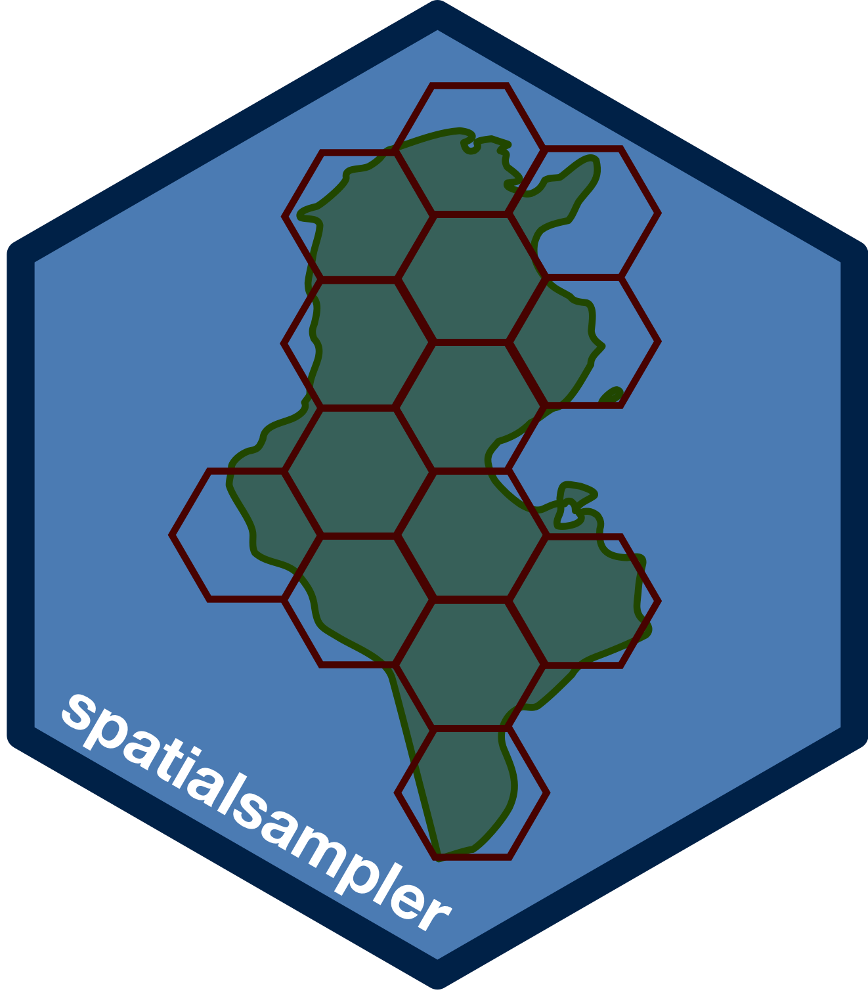

spatialsampler: An Implementation of Centric Systematic Area Sampling (CSAS) and Simple Spatial Sampling Method (S3M) in R 
The Centric Systematic Area Sampling (CSAS) and the Simple Spatial Survey Method (S3M) are spatial sampling methods adapted and used in health and nutrition surveys by Brixton Health and Valid International. CSAS and S3M are used in surveys designed to be spatially representative i.e., the sample distributed evenly across the survey area, using a spatial sample design that selected communities located closest to the centroids of a square (for CSAS) or hexagonal (for S3M) grid laid over the survey area.
The spatialsampler package provides sets of functions for implementing the Centric Systematic Area Sampling (CSAS) and Simple Spatial Sampling Method (S3M) using R.
Installation
You can install spatialsampler from GitHub with:
## Install if(!require(remotes)) install.packages("remotes") remotes::install_github("spatialworks/spatialsampler") ## Load library(spatialsampler)
Usage
The current functions in spatialsampler can be grouped into two (2) classes: calculator functions and sampling functions.
The calculator functions support the estimation of spatial sampling parameters needed for CSAS and S3M. These include the calculation of areas of grids, calculation of d value in kilometres that the grid area represents, calculation of height and length of rectangular grid for S3M and calculation of number of grids given the sampling area and d value or area size of grids.
The sampling functions support the implementation of the CSAS or S3M sampling.
Calculator functions
Calculates the area size of the resulting hexagon in a hexagonal grid and the area size of the resulting triangle in a triangular grid for a specified value of d (in kms) used in the simple spatial sampling method (S3M).
Given a d of 10 kms, area can be calculated as follows:
calculate_area(d = 10, digits = 2) #> tri hex #> 1 129.9 259.81
The result is a data frame of 1 row and 2 columns. The first column gives the area of the triangular grid (in kms) and the second column gives the area of the hexagonal grid (in kms).
Sampling functions
- Create a hexagonal sampling grid based on a d of 15 kms
## Subset Sudan map to Sennar state map sennar <- subset(sudan01, STATE == "Sennar") ## Create sampling grid samp.points <- create_sp_grid(x = sennar, d = 15, buffer = 10, country = "Sudan")
create_sp_grid() creates
hex.samp <- sp::HexPoints2SpatialPolygons(samp.points) villages.sp <- get_nearest_point(data = sennar_villages, data.x = "x", data.y = "y", query = samp.points, duplicate = FALSE)

Sampling map of Sennar at d = 15 kms

Sampling map of Sennar at d = 15 kms with buffering